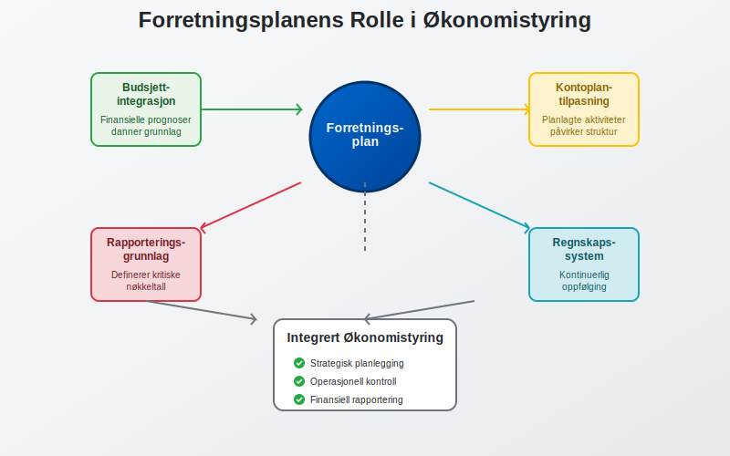
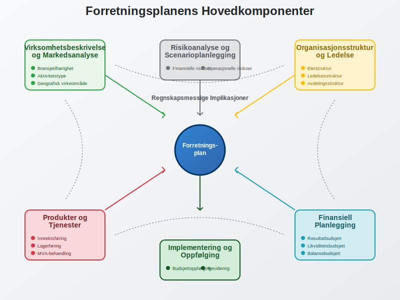
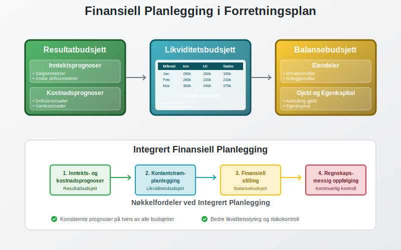
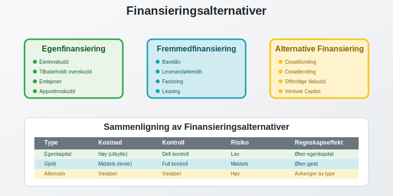
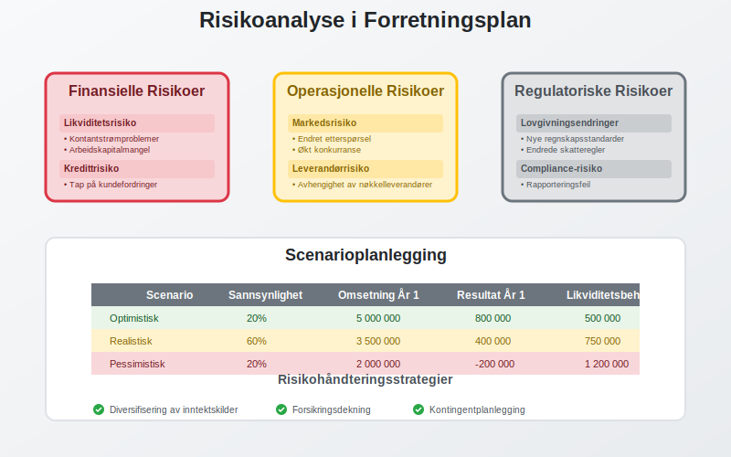
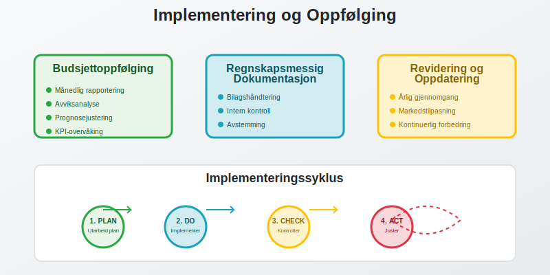
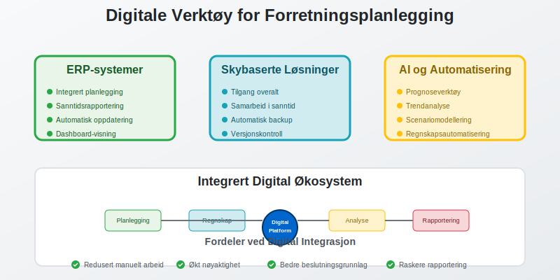

En forretningsplan er et omfattende dokument som beskriver en virksomhets mål, strategier og finansielle prognoser. For regnskapsførere og bedriftseiere er forretningsplanen et kritisk verktøy som ikke bare fungerer som en veikart for virksomheten, men også som grunnlag for finansiell planlegging, budsjettering og regnskapsmessig oppfølging.
For å bygge en effektiv forretningsplan er det viktig først å utvikle en tydelig forretningsmodell.
Før du utarbeider en forretningsplan, bør du først ha en klar forretningsidé som definerer virksomhetens kjernekonsept og verdiforslag.
I mange virksomheter er innovasjon en sentral driver for vekst. Utforsk dette nærmere i vår artikkel Innovasjon.
Seksjon 1: Forretningsplanens Rolle i Regnskapssammenheng
En forretningsplan er fundamentet for all økonomisk styring og regnskapsføring i en virksomhet. Den etablerer de finansielle rammene som regnskapet senere skal måles mot.

1.1 Sammenheng med Regnskapssystemet
Forretningsplanen integreres direkte med virksomhetens regnskapssystem på flere nivåer:
- Budsjettintegrasjon: Planens finansielle prognoser danner grunnlag for budsjettplanlegging
- Kontoplantilpasning: Planlagte aktiviteter påvirker valg av kontostruktur i bokføringen
- Rapporteringsgrunnlag: Planen definerer hvilke nøkkeltall og rapporter som er kritiske for oppfølging
1.2 Juridiske og Regnskapsmessige Krav
For visse selskapsformer er forretningsplaner påkrevd eller sterkt anbefalt:
| Selskapsform | Krav til Forretningsplan | Regnskapsmessige Implikasjoner |
|---|---|---|
| Aksjeselskap (AS) | Anbefalt ved stiftelse | Grunnlag for aksjekapital og egenkapitalplanlegging |
| Enkeltpersonforetak | Ikke påkrevd | Viktig for skille mellom privat og næring |
| Ansvarlig selskap | Anbefalt | Grunnlag for ansvarsfordeling og kapitalkontoer |
Seksjon 2: Forretningsplanens Hovedkomponenter
En komplett forretningsplan består av flere integrerte deler som alle har regnskapsmessige implikasjoner.

2.1 Virksomhetsbeskrivelse og Markedsanalyse
Virksomhetsbeskrivelsen danner grunnlaget for regnskapsmessig klassifisering og rapportering:
- Bransjetilhørighet: Påvirker valg av regnskapsstandarder og bransjespecifikke krav
- Aktivitetstype: Bestemmer om virksomheten driver detaljhandel, engroshandel eller tjenesteyting
- Geografisk virkeområde: Påvirker MVA-behandling og internasjonale regnskapskrav
2.2 Organisasjonsstruktur og Ledelse
Organisasjonsstrukturen har direkte innvirkning på regnskapsføringen:
- Eierstruktur: Påvirker egenkapitalsoppstilling
- Ledelsesstruktur: Definerer ansvar for regnskapsføring og intern kontroll
- Avdelingsstruktur: Grunnlag for eventuell avdelingsregnskap
2.3 Produkter og Tjenester
Beskrivelsen av produkter og tjenester påvirker flere regnskapsmessige områder:
- Inntektsføring: Bestemmer når og hvordan inntekter skal bokføres
- Lagerføring: Påvirker verdivurdering og regnskapsføring av varelager
- MVA-behandling: Bestemmer MVA-sats og avgiftsplikt
Seksjon 3: Finansiell Planlegging og Prognoser
Den finansielle delen av forretningsplanen er kjernen for all regnskapsmessig oppfølging.

3.1 Resultatbudsjett
Resultatbudsjettet er en prognose for virksomhetens driftsresultat over planperioden:
Inntektsprognoser:
- Salgsinntekter fra kjernevirksomhet
- Andre driftsinntekter
- Finansinntekter
Kostnadsprognoser:
- Driftskostnader (lønn, husleie, markedsføring)
- Varekostnader og innkjøp
- Finanskostnader
3.2 Likviditetsbudsjett
Likviditetsbudsjettet planlegger kontantstrømmen og er kritisk for daglig drift:
| Måned | Inngående likviditet | Innbetalinger | Utbetalinger | Utgående likviditet |
|---|---|---|---|---|
| Januar | 100 000 | 250 000 | 200 000 | 150 000 |
| Februar | 150 000 | 280 000 | 220 000 | 210 000 |
| Mars | 210 000 | 300 000 | 240 000 | 270 000 |
Kritiske faktorer for likviditet:
- Kunders betalingsvilkår og debitorhåndtering
- Leverandørers betalingsvilkår
- Sesongvariasjoner i salg og innkjøp
- Investeringer i anleggsmidler
3.3 Balansebudsjett
Balansebudsjettet viser planlagt finansiell stilling ved periodens slutt:
Eiendeler:
- Omløpsmidler (kontanter, kundefordringer, varelager)
- Anleggsmidler (bygninger, maskiner, immaterielle eiendeler)
Gjeld og egenkapital:
- Kortsiktig gjeld (leverandørgjeld, skyldige offentlige avgifter)
- Langsiktig gjeld (banklån, obligasjoner)
- Egenkapital (innskutt og opptjent kapital)
Seksjon 4: Finansieringsplan og Kapitalstruktur
Finansieringsplanen beskriver hvordan virksomheten skal finansieres og har direkte innvirkning på regnskapsføringen.

4.1 Egenfinansiering
Egenfinansiering omfatter kapital fra eiere og tilbakeholdt overskudd:
- Eierinnskudd: Kontantinnskudd eller apportinnskudd av eiendeler
- Tilbakeholdt overskudd: Reinvestering av tidligere års resultat
- Emisjoner: Utstedelse av nye aksjer eller andeler
4.2 Fremmedfinansiering
Fremmedfinansiering omfatter alle former for lånt kapital:
- Banklån: Tradisjonelle bedriftslån med fast eller variabel rente
- Leverandørkreditt: Utsatt betaling til leverandører
- Factoring: Salg av kundefordringer for øyeblikkelig likviditet
- Leasing: Operasjonell eller finansiell leasing av eiendeler
4.3 Alternative Finansieringsformer
Moderne virksomheter har tilgang til innovative finansieringsløsninger:
- Crowdfunding: Innsamling av kapital fra mange små investorer
- Crowdlending: Lån fra private investorer via digitale plattformer
- Offentlige tilskudd: Støtte fra Innovasjon Norge og andre offentlige organer
Seksjon 5: Risikoanalyse og Scenarioplanlegging
En grundig risikoanalyse er essensielt for robust finansiell planlegging og regnskapsmessig oppfølging.

For en strukturert metode for å vurdere interne og eksterne faktorer, se SWOT-analyse.
5.1 Finansielle Risikoer
Likviditetsrisiko:
- Risiko for at virksomheten ikke kan møte sine kortsiktige forpliktelser
- Påvirker arbeidskapitalstyring og kontantstrømplanlegging
Kredittrisiko:
- Risiko for tap på kundefordringer
- Krever systematisk debitoroppfølging og avsetninger for tap
Valutarisiko:
- Relevant for virksomheter med internasjonal handel
- Påvirker regnskapsføring av utenlandske transaksjoner
5.2 Operasjonelle Risikoer
Markedsrisiko:
- Endringer i etterspørsel og konkurransesituasjon
- Påvirker inntektsprognoser og verdivurdering av eiendeler
Leverandørrisiko:
- Avhengighet av kritiske leverandører
- Påvirker kostnadsprognoser og lagerplanlegging
Regulatorisk risiko:
- Endringer i lover og forskrifter
- Kan påvirke regnskapsstandarder og rapporteringskrav
5.3 Scenarioplanlegging
Utvikling av ulike scenarier hjelper med å forstå potensielle utfall:
| Scenario | Sannsynlighet | Omsetning År 1 | Resultat År 1 | Likviditetsbehov |
|---|---|---|---|---|
| Optimistisk | 20% | 5 000 000 | 800 000 | 500 000 |
| Realistisk | 60% | 3 500 000 | 400 000 | 750 000 |
| Pessimistisk | 20% | 2 000 000 | -200 000 | 1 200 000 |
Seksjon 6: Implementering og Oppfølging
En forretningsplan er kun verdifull hvis den implementeres og følges opp systematisk gjennom regnskapet.

6.1 Budsjettoppfølging
Månedlig rapportering:
- Sammenligning av faktiske tall mot budsjett
- Analyse av avvik og årsaker
- Justering av prognoser basert på nye erkjennelser
Nøkkeltall og KPI-er:
- Dekningsbidrag per produkt/tjeneste
- Egenkapitalrentabilitet
- Likviditetsgrad og arbeidskapital
6.2 Regnskapsmessig Dokumentasjon
Bilagshåndtering:
- Systematisk bilagsføring av alle transaksjoner
- Kobling mellom planlagte og faktiske aktiviteter
- Dokumentasjon som støtter regnskapsføringen
Intern kontroll:
- Avstemming av kontoer mot eksterne kilder
- Avvikshåndtering ved uoverensstemmelser
- Regelmessig gjennomgang av regnskapskvalitet
6.3 Revidering og Oppdatering
Årlig gjennomgang:
- Evaluering av planens nøyaktighet og relevans
- Oppdatering basert på markedsendringer og erfaringer
- Justering av finansielle mål og strategier
Kontinuerlig forbedring:
- Læring fra avvik mellom plan og virkelighet
- Forbedring av prognosemetoder og planleggingsprosesser
- Tilpasning til nye regnskapsstandarder og krav
Seksjon 7: Digitale Verktøy og Teknologi
Moderne forretningsplanlegging drar nytte av digitale løsninger som integrerer med regnskapssystemer.

7.1 Integrerte Planleggingsverktøy
ERP-systemer:
- Integrering mellom forretningsplan og ERP-system
- Automatisk oppdatering av prognoser basert på faktiske data
- Sanntidsrapportering og dashboards
Skybaserte løsninger:
- Tilgang til plandata fra hvor som helst
- Samarbeid mellom flere brukere
- Automatisk backup og versjonskontroll
7.2 Automatisering og AI
Prognoseverktøy:
- Maskinlæring for forbedrede salgsprognoser
- Automatisk identifikasjon av trender og mønstre
- Scenariomodellering basert på historiske data
Regnskapsautomatisering:
- Automatisk bilagsmottak og -behandling
- Elektronisk fakturering og EHF
- Automatisk bankavstemming
Seksjon 8: Juridiske og Regulatoriske Aspekter
Forretningsplaner må ta hensyn til gjeldende lover og forskrifter som påvirker regnskapsføringen.
8.1 Bokføringsloven og Regnskapsregler
Grunnleggende krav:
- Overholdelse av bokføringsloven og bokføringsforskriften
- Bokføringsplikt for ulike virksomhetstyper
- Krav til dokumentasjon og oppbevaring
Rapporteringskrav:
- Årlig innlevering av regnskap til Regnskapsregisteret
- A-melding for lønn og arbeidsgiveravgift
- MVA-rapportering og skatteoppgjør
8.2 Sektorspesifikke Krav
Finansielle tjenester:
- Særlige kapitalkrav og soliditetsregler
- Rapportering til Finanstilsynet
- Krav til risikostyring og intern kontroll
Offentlige anskaffelser:
- Krav til anskaffelser over visse beløpsgrenser
- Dokumentasjon av anskaffelseskost
- Transparens og etiske retningslinjer
Seksjon 9: Internasjonale Aspekter
For virksomheter med internasjonal virksomhet må forretningsplanen adressere komplekse regnskapsmessige utfordringer.
9.1 Valutahåndtering
Transaksjonsvaluta:
- Regnskapsføring av transaksjoner i fremmed valuta
- Kurssikring og derivatinstrumenter
- Påvirkning på likviditet og resultat
Rapporteringsvaluta:
- Omregning av utenlandske datterselskaper
- Konsolideringsutfordringer
- Valutaeffekter i konsernregnskapet
9.2 Transfer Pricing
Internprising:
- Prissetting av transaksjoner mellom konsernselskaper
- Dokumentasjonskrav og compliance
- Skattemessige implikasjoner
Konklusjon
En forretningsplan er langt mer enn et dokument for å skaffe finansiering - det er et levende verktøy som integrerer strategisk planlegging med praktisk regnskapsføring. For regnskapsførere og bedriftseiere representerer en velutarbeidet forretningsplan grunnlaget for:
- Systematisk økonomistyring gjennom integrert budsjett- og regnskapsoppfølging
- Risikohåndtering ved å identifisere og planlegge for potensielle utfordringer
- Strategisk beslutningsstøtte basert på finansielle analyser og prognoser
- Compliance og rapportering i henhold til gjeldende lover og forskrifter
Ved å følge prinsippene og metodene beskrevet i denne artikkelen, kan virksomheter utvikle forretningsplaner som ikke bare oppfyller eksterne krav, men også fungerer som kraftige verktøy for intern styring og regnskapsmessig kontroll. Den kontinuerlige oppfølgingen og revideringen av planen sikrer at den forblir relevant og verdifull gjennom hele virksomhetens livssyklus.
Husk at en forretningsplan aldri er ferdig - den må kontinuerlig oppdateres og tilpasses endringer i marked, regulering og virksomhetens egen utvikling. Dette gjør den til et dynamisk verktøy som støtter både kortsiktig drift og langsiktig vekst.